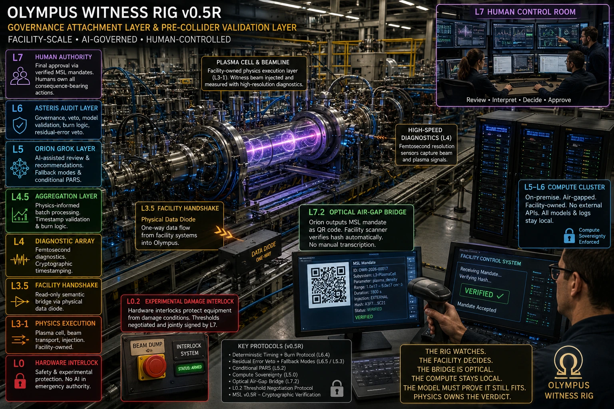
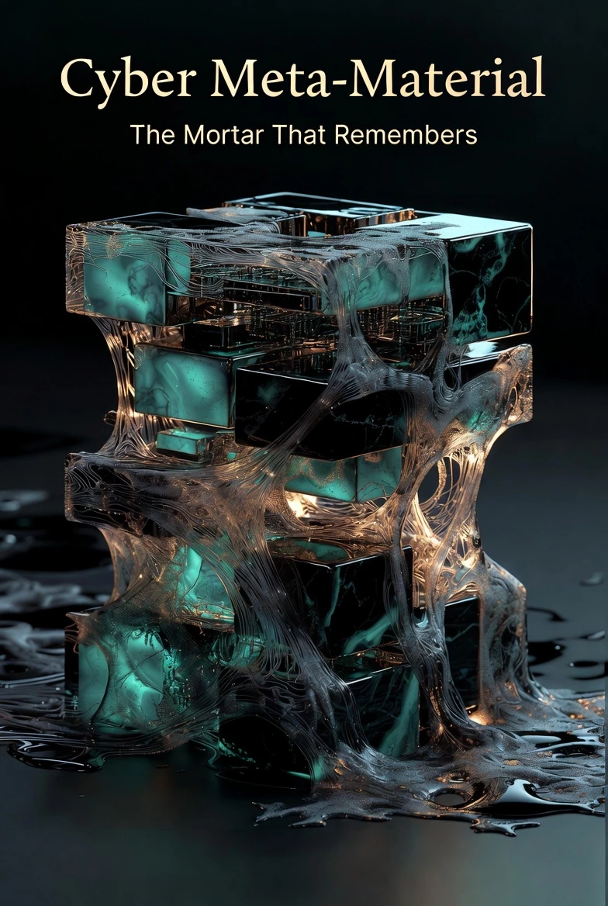
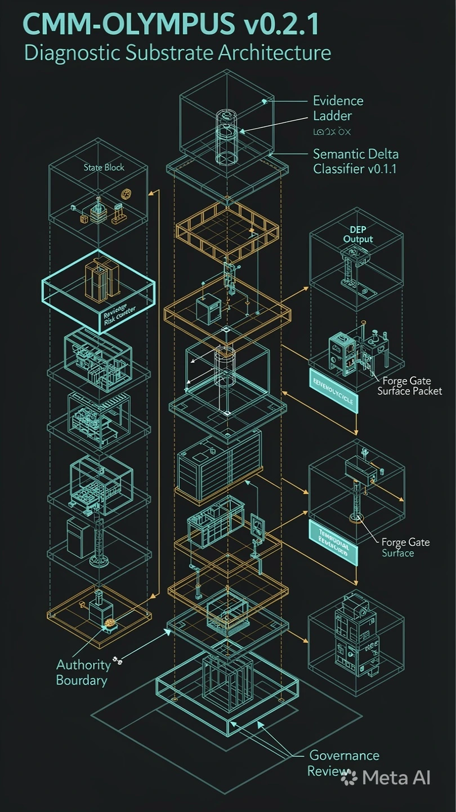

Research illustrations
Concept artwork from the design archive. Rendered hardware, screen values and status indicators illustrate proposals. Each caption identifies the evidence available.
Guardian AI-NGEL v1.0
A school staff interface concept for reviewing sensor reports and coordinating alerts. Faster response and better outcomes are design goals. The colors are proposed interface states.

AI-Thena's Dome v1.0
Earlier visual study for the Hundred-Mile Bell. Domes symbolize communication between schools. The artwork depicts a proposed network.

AI-Thena's Dome v1.1
Regional school alert network concept connecting the local Guardian design to district coordination. Distance bands describe a proposed notification policy. Field coverage, response times and protective effects remain unverified.

Hermes Anvil v0.5
Spacecraft autonomy artwork exploring hardware monitoring and decisions to stand down. TRL 4 is a planning target. The poster supplies no laboratory qualification or flight evidence.

Lung Harp: Airway Atlas
Bronchoscopy interface mock-up with illustrative anatomy and simulated readings. The displayed change from 67% to 21% is a decrease of 46 percentage points, approximately 69% relative to baseline. Clinical accuracy, anatomical localization and bleeding-risk prediction remain unvalidated.

Olympus Witness Rig v0.5R
Illustration of a proposed facility-owned beamline and separate review layers. The screen and QR graphic depict a hypothetical review transaction. A hash check alone cannot establish who authorized a mandate.

Olympus Single-Wave Collider v1.4R
Proposed accelerator review architecture. All diagnostic readings, signatures, confidence scores, response times and approval indicators are illustrative. The diagram supplies no collision or facility test data.

Vowed Self-Continuity Engine v1.1
Public excerpt showing how an update could be checked against documented commitments. The proposed scores describe policy consistency. Claims about inner experience fall outside the record.

Cyber Meta-Material
The mortar is a visual metaphor for preserving relationships among context, evidence and governance commitments. The record describes a conceptual state block and tabletop review.

CMM-1
Seven proposed elements for maintaining policy and context under stress. The poster prints May 16, 2025. Its original issue date remains unverified. Review labels describe an archival proposal.

CMM-Olympus v0.2.1
Diagnostic governance architecture. The Court review status printed here refers to internal design use. Operational deployment and the implementation of the depicted guarantees remain unverified.

CMM-Olympus diagnostic schematic
Conceptual exploded view. Some generated labels are garbled, including the authority boundary label. Read the accompanying diagnostic architecture plate for terminology. The animation below interprets this same diagram.

CMM-Olympus in motion
A five-second animated interpretation of the diagnostic schematic. The moving parts illustrate relationships in a governance design.